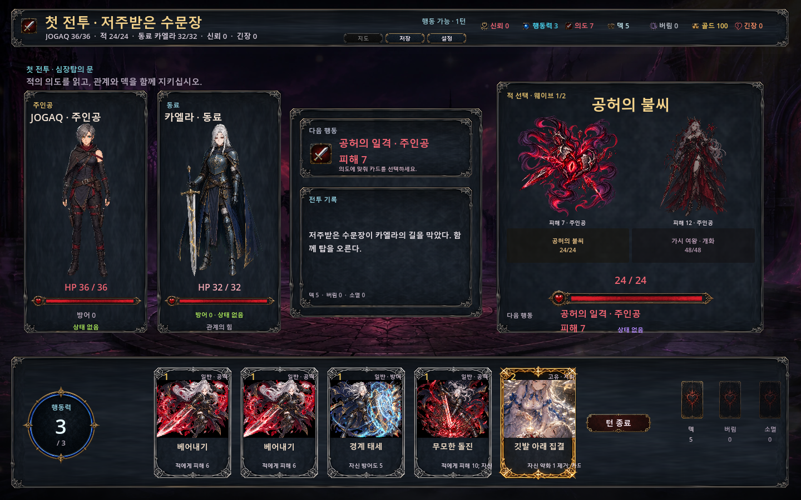
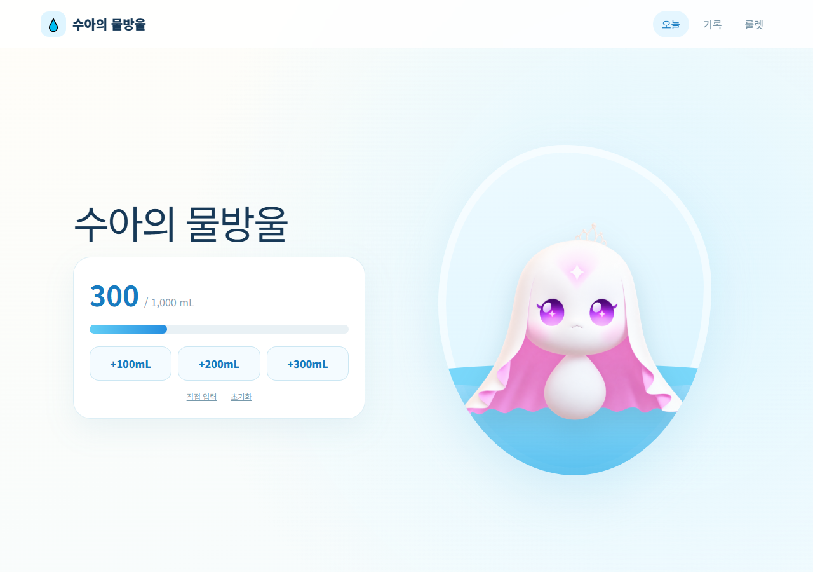
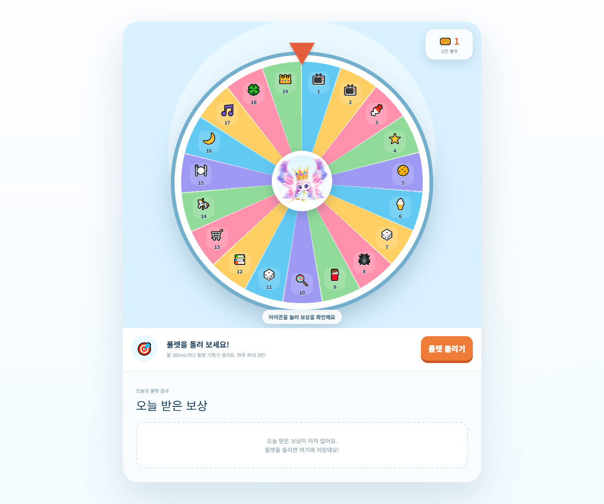
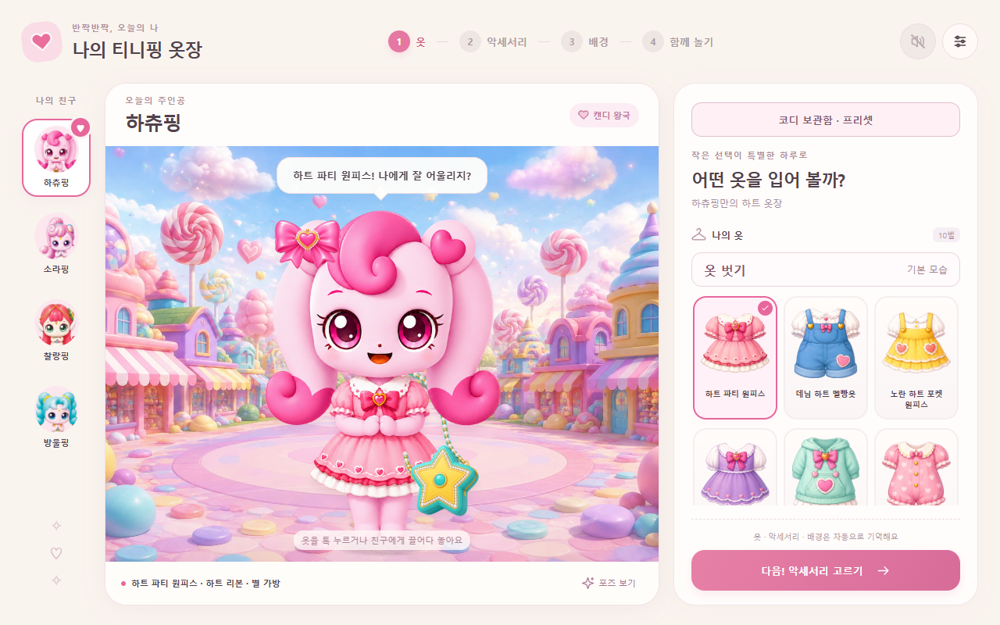

APPENDIX · 개인 프로젝트와 AI 활용
기획을
직접 실행해보기
게임 규칙과 데이터를 플레이 가능한 형태로 연결하고, 생활 기록과 놀이 아이디어를 웹앱으로 만들었습니다. 기획 의도와 확인할 조건을 제시하고 AI와 함께 구현한 사례입니다.
PROJECT 01
기획 데이터를
실제 전투에 연결하기

엑셀에서 관리하는 적 정보·행동 패턴·웨이브 구성을 Godot 전투에 연결한 개인 프로토타입입니다.
담당 작업
- 적·행동·웨이브 데이터를 정리하고 내보내기·검증 흐름을 구성했습니다.
- AI와 함께 데이터 변환·검증, 적별 상태 관리, 공격 대상 선택과 웨이브 전환을 구현했습니다.
PROJECT 02
생활 기록과 보상을
하나의 흐름으로 연결하기


물 섭취량 기록과 목표 진행도, 누적량에 따른 보상 놀이를 연결한 웹앱입니다.
담당 작업
- 300mL마다 룰렛 기회를 제공하고 하루 최대 3회 참여하는 규칙을 구성했습니다.
- AI와 함께 섭취량 입력·달력·룰렛을 구현하고, 날짜별 기록과 보상 내역을 브라우저에 저장하도록 연결했습니다.
PROJECT 03
꾸민 캐릭터와
계속 놀 수 있는 화면 만들기

하츄핑 캐릭터의 옷과 악세서리를 고르고, 꾸민 캐릭터를 무대에 배치해 노는 웹 프로토타입입니다.
담당 작업
- 캐릭터 선택 → 꾸미기와 코디 저장 → 무대 배치로 이어지는 놀이 흐름을 구성했습니다.
- AI와 함께 옷·악세서리·배경 변경, 친구별 위치·앞뒤 순서 저장과 단체 사진 기능을 구현했습니다.